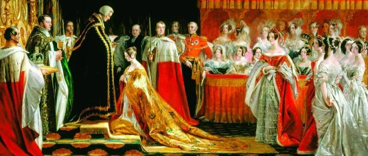

Victoria married her first cousin Prince Albert of Saxe-Coburg and Gotha in the Chapel Royal, St. James’ Palace on 10th of February 1840. Prince Albert died on December 14th, 1861, at the age of 42 due to typhoid fever. His death left a major impact on the now widowed Victoria who mourned him for the rest of her life. For forty years she wore entirely black and had multiple landmarks, buildings, and statues built for Albert after his passing.
Now Queen Victoria at the age of 19 she was placed with the responsibility of ruling over one quarter of the world's population, her reign lasted 63 years and is known as the Victorian Era of history. The countries under British rule included New Zealand, Canada, Ireland, Great Britain, Australia, and India. However, this list excludes the smaller colonies within Africa and Hong Kong. She is commonly known in historical contexts as “The grandmother of Europe” as many royal households across different continents and countries can link their history directly back to Queen Victoria, having over 42 grandchildren integrated into royal households contributed heavily to this.
In India, the British rule extended its influence, establishing themselves as the British Raj and coronating Queen Victoria as the “Empress of India”.
Queen Victoria was crowned on the 28th of June 1838, aged 19 at the time. Once the title of Queen was passed to Victoria her first order was to move her bed out of her mothers room - establishing her independence immediately. The ceremony itself took 5 hours and was held at Westminster Abbey in London, the event was held with a lack of preparation, here's the mistakes that happened: